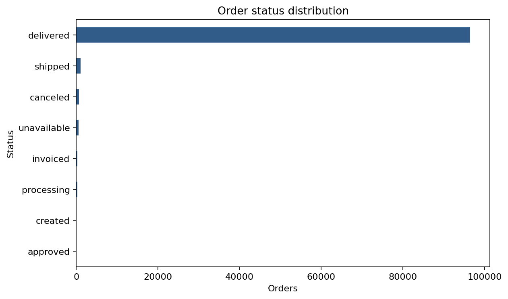
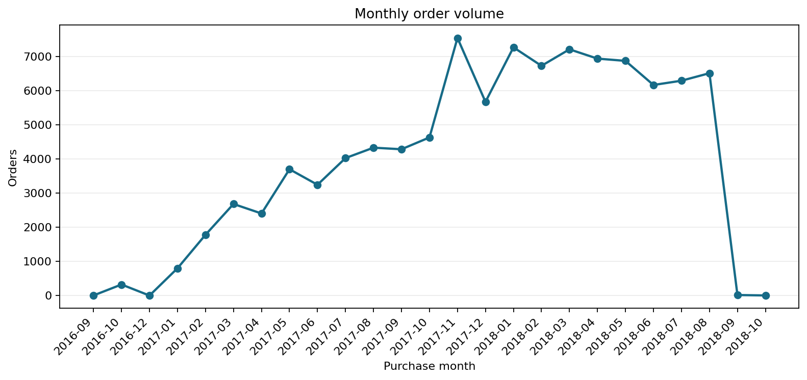
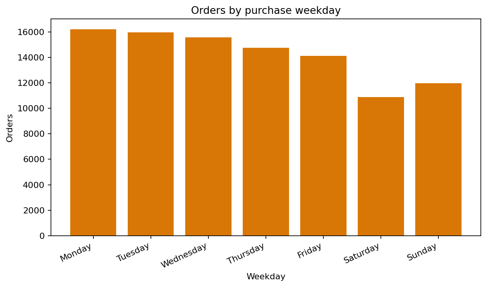
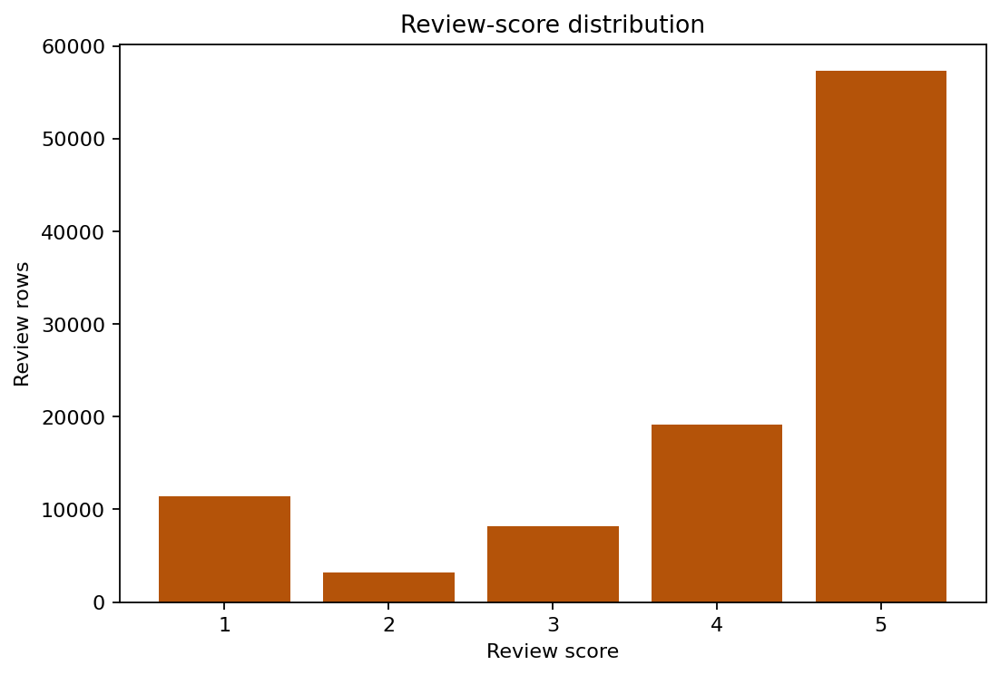
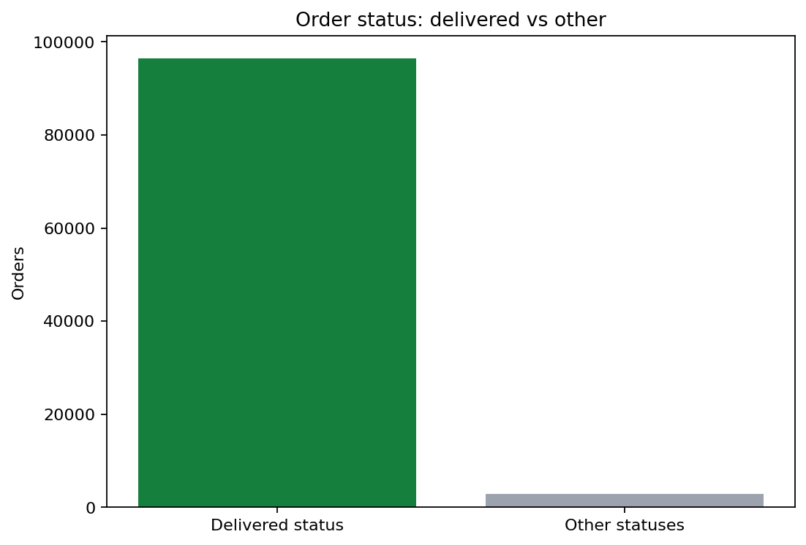

Baseline Order-Journey EDA
This report is generated by scripts/build_order_journey_eda.py from the deterministic dashboard/data.js output. That output is built from Dataviz_proj_all_datasets.xlsx by the Issue #3 pipeline. The analysis is order-level unless stated otherwise. It is intended to establish the marketplace baseline before the regional, product, seller, and delivery-impact analyses.
Scope and data handling
- Source:
orders_datasetandorder_reviews_datasetthrough the validated dashboard pipeline. - One row in the order table represents one order; the upstream pipeline preserves the source row grain.
- Review distribution uses review rows directly, so an order can contribute more than one review row if present.
- A completed delivery means
order_status == deliveredand a non-missingorder_delivered_customer_date, matching the project metric dictionary. - No orders are removed for this baseline overview. Missing timestamps and missing reviews follow the project metric dictionary denominator rules.
Scale snapshot
| Measure | Value |
|---|---|
| Orders | 99,441 |
| Items | 112,650 |
| Sellers | 3,095 distinct sellers |
| Customers | 96,096 distinct customer identities |
| Products | 32,951 distinct products |
| Review rows | 99,224 |
| Average review score | 4.09 |
| High reviews (4-5) | 77.1% |
| Low reviews (1-2) | 14.7% |
| Orders with delivered status | 96,478 (97.0% of orders) |
Order status
| Status | Orders |
|---|---|
approved | 2 |
canceled | 625 |
created | 5 |
delivered | 96,478 |
invoiced | 314 |
processing | 301 |
shipped | 1,107 |
unavailable | 609 |
The marketplace is overwhelmingly delivered orders, but the non-delivered statuses remain important for understanding the gap between placed orders and successful customer completion.

Timing patterns

Order volume peaks in 2017-11 with 7,544 orders. The weekday pattern peaks on Monday with 16,196 orders. These patterns provide the baseline for checking whether later segments differ from the overall marketplace seasonality or weekly rhythm.

Customer satisfaction

Five-star reviews are the largest group, while the low-review share is still large enough to warrant operational investigation. The review distribution is descriptive only here; delivery speed and category differences should be tested in the dedicated downstream analyses.
Delivery status coverage

This overview chart uses the exact order-status split. Delivery-time metrics use the stricter project definition requiring both delivered status and a non-missing customer-delivery timestamp; those metrics are validated by the project pipeline separately.
Hypotheses for deeper analysis
1. Longer delivery times are associated with lower review scores and a higher low-review rate; test this with delivery-day bins and late-versus-on-time comparisons. 2. The marketplace's overall satisfaction hides category and regional risk; test whether high-volume categories or states combine meaningful demand with worse delivery or review outcomes. 3. The weekday and monthly demand pattern may change the operational load on sellers; test whether peak periods have higher delays after controlling for category and region.
Reproduction
python3 scripts/build_order_journey_eda.pyThe command regenerates this report and the five PNG visuals in docs/eda/.